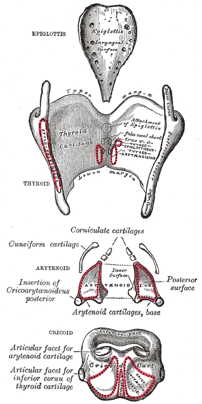
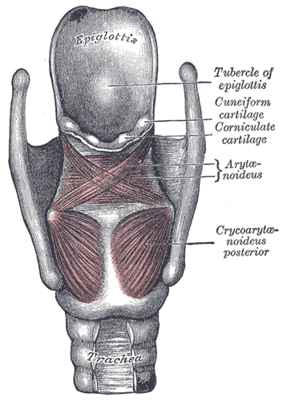
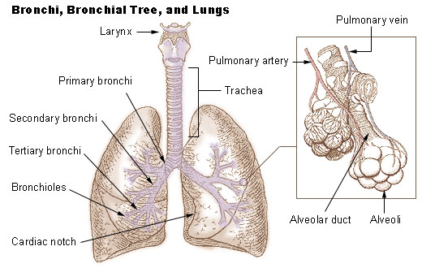
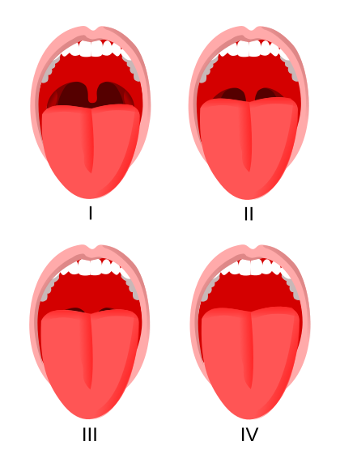
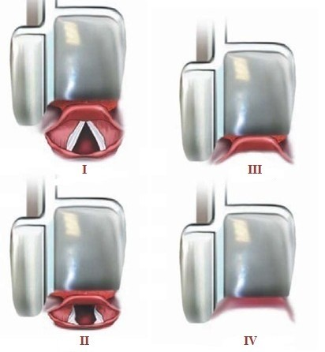

Anatomy of the Airway
"You cannot manage what you cannot picture. Every airway manoeuvre — mask seal, laryngoscopy, supraglottic placement, cricothyroidotomy — is applied anatomy. The airway is conventionally divided at the vocal cords into an upper (conducting) airway you can see and instrument, and a lower (tracheobronchial) airway you confirm and protect."
Synthesised from Miller's Anesthesia — Airway Management; Morgan & Mikhail's Clinical Anesthesiology.The upper airway
- Nose & nasopharynx — warms, humidifies and filters gas; the route for nasal intubation and NPAs (beware turbinates and the adenoids).
- Oral cavity & oropharynx — tongue is the commonest cause of obstruction in the unconscious patient; the palatine tonsils and soft palate frame the Mallampati view.
- Hypopharynx & larynx — the epiglottis, aryepiglottic folds, and the glottis (the vocal cords and the space between them — the narrowest point in the adult airway). The larynx sits at C3–C6.
- Laryngeal cartilages — the unpaired thyroid, cricoid and epiglottis and the paired arytenoid, corniculate and cuneiform cartilages. The cricoid is the only complete ring — the landmark for cricoid pressure. The cricothyroid membrane, between thyroid and cricoid cartilages, is the site for emergency front-of-neck access.
- Innervation — sensory above the cords by the internal branch of the superior laryngeal nerve; below the cords and motor to all intrinsic muscles (except cricothyroid) by the recurrent laryngeal nerve; the cricothyroid muscle by the external branch of the SLN. These are the nerves blocked for awake intubation.



The lower airway
- Trachea — ~10–12 cm, 16–20 C-shaped cartilage rings anteriorly with a posterior membranous wall; extends from the cricoid (C6) to the carina (~T4–T5, the sternal angle).
- Bronchial tree — the right main bronchus is wider, shorter and more vertical, so a too-deep tube (and aspirated material) tends to enter the right side; then lobar → segmental bronchi → bronchioles → terminal & respiratory bronchioles → alveolar ducts and alveoli.
- Clinical corollaries — confirm the tube tip is above the carina; endobronchial intubation causes one-lung ventilation and desaturation; the paediatric airway differs (larynx higher/more anterior, the cricoid is the narrowest point, large occiput and tongue).

Airway Assessment — Every Parameter
"No single bedside test predicts a difficult airway reliably; their power lies in combination and in the context of a good history. The one part of assessment that only the anaesthetist can perform — and that no consultant referral will provide — is the look at the airway. A documented previous difficult intubation is the strongest single predictor."
Synthesised from Miller's Anesthesia; Barash — Clinical Anesthesia; Roth D et al., Cochrane review of bedside airway tests.History & definitions first
- Previous anaesthesia — difficult mask/intubation, prior awake technique, tracheostomy, a "difficult airway" alert; read the old chart.
- Airway symptoms & pathology — hoarseness, stridor, dysphagia, snoring/OSA, head-and-neck cancer, radiotherapy, rheumatoid/ankylosing spine, acromegaly, burns, infection (Ludwig's, epiglottitis).
- Definitions: difficult mask ventilation (unable to maintain SpO₂ >90%); difficult laryngoscopy (Cormack–Lehane 3–4); difficult/failed intubation; and CICO — can't intubate, can't oxygenate.
Examination — the parameters assessed
Assess each one and combine them — the individual thresholds are collected as a table in §3.
- Modified Mallampati class — visibility of the faucial pillars, soft palate and uvula (patient sitting, mouth maximally open, tongue out, no phonation).
- Mouth opening / inter-incisor gap — space for laryngoscope and device insertion.
- Thyromental & sternomental distance — the size of the anterior mandibular space into which the tongue is displaced.
- Hyomental distance and the 3-3-2 rule (mouth opening / hyoid–chin / thyroid notch–floor of mouth).
- Upper-lip-bite test & mandibular protrusion — mandibular movement and dental architecture.
- Neck movement / atlanto-occipital extension — chin-to-chest and looking at the ceiling; the "sniffing" position depends on it.
- Dentition — prominent incisors ("buck teeth"), loose/capped/crowned teeth, edentulism (easy laryngoscopy but difficult mask seal).
- Neck & soft tissue — short/thick neck, large circumference, goitre, mass, scar, radiation change, beard (mask seal).
- Ultrasound anterior-neck measures — increasingly used (see §5).

- LEMON (difficult intubation): Look externally · Evaluate 3-3-2 · Mallampati · Obstruction/Obesity · Neck mobility.
- MOANS (difficult mask): Mask seal/beard · Obesity/Obstruction · Age >55 · No teeth · Stiff lungs/Snoring.
- RODS (difficult SGA): Restricted mouth opening · Obstruction · Distorted anatomy · Stiff lungs.
- SHORT (difficult FONA): Surgery/Scar · Haematoma · Obesity · Radiation · Tumour.
- HEAVEN criteria describe difficulty in the emergency/critical-care setting.
Three minutes of tidal breathing (or 8 vital-capacity breaths) of 100% O₂ to an end-tidal O₂ >0.85–0.9 fills the FRC with oxygen and extends safe apnoea time. Nasal apnoeic oxygenation (15 L/min, or high-flow nasal oxygen) during laryngoscopy prolongs the window further — especially in obesity, pregnancy and critical illness.
Airway Scores — Values & Difficulty
What each measurement means and the threshold that flags difficulty.
Single bedside tests
| Test | Grades / values | Predicts difficulty when… |
|---|---|---|
| Modified Mallampati | I: soft palate, fauces, uvula, pillars · II: uvula tip hidden · III: only soft palate · IV: only hard palate | III–IV |
| Inter-incisor gap | Normal >5 cm / 3 fingers | <3 cm (difficult DL); <2 cm (difficult LMA) |
| Thyromental distance | >6.5 cm reassuring | 6–6.5 cm difficult but possible; <6 cm may be impossible |
| Sternomental distance | Sternal notch → chin, neck extended | <12.5 cm |
| Hyomental distance | Gr I >6 cm · II 4–6 cm · III <4 cm | Grade III (<4 cm) |
| Upper-lip-bite test | I: bite above vermilion · II: below · III: cannot reach | Class III |
| Mandibular protrusion | A: lower teeth beyond upper · B: edge-to-edge · C: cannot | Class B / C |
| Neck / atlanto-occipital extension | Normal ≈35° | ≥⅔ reduction of extension |
Cormack–Lehane laryngoscopic grade

| Grade | Laryngoscopic view | Difficulty |
|---|---|---|
| 1 | Most of the glottis / full cords | Easy |
| 2 | Posterior glottis / arytenoids only (2a partial cords, 2b arytenoids only) | Usually easy (2b harder) |
| 3 | Epiglottis only (3a liftable, 3b adherent) | Difficult |
| 4 | Neither epiglottis nor glottis | Very difficult |
Grades 3–4 define difficult laryngoscopy. The POGO (percentage of glottic opening) score is an alternative continuous measure often used with videolaryngoscopy.
Composite / multivariable scores
| Score | What it combines | Cut-off for difficulty |
|---|---|---|
| Wilson risk score | Weight, head-&-neck movement, jaw movement, receding mandible, buck teeth (each 0–2) | Total ≥2 (of 10) predicts difficult intubation |
| El-Ganzouri / Simplified Airway Risk Index (SARI) | Mouth opening, thyromental distance, Mallampati, neck movement, jaw protrusion, weight, history of difficult intubation (0–12) | ≥4 suggests difficulty |
| LEMON score | 1 point each: Look, 3-3-2 abnormal, Mallampati ≥3, Obstruction, Neck immobility | Higher score → higher risk (used in ED) |
| Arné score | Pathology, prior difficulty, symptoms, Mallampati, TMD, mouth opening, neck movement | ≥11 predicts difficulty |
Bottom line: composites improve on any single test but none is perfect — always prepare for the airway you did not predict.
The Difficult Airway — Guidelines & Management
View the full guideline algorithms (open in a new tab):
🇬🇧 DAS master algorithm ↗ Plan A ↗ Plan B ↗ Plan C ↗ Plan D ↗ 🇮🇳 AIDAA master ↗ AIDAA failed airway ↗
Plan A — facemask ventilation & tracheal intubation: optimise position, preoxygenate, maximum 3 (+1 senior) attempts; use VL, bougie, external laryngeal manipulation. Fail → declare failed intubation.
Plan B — maintain oxygenation with a second-generation SGA (max 3 attempts). Stop and think: wake, or intubate via the SGA.
Plan C — final facemask attempt (adjuncts, two-person). If adequate → wake the patient.
Plan D — CICO → 100% O₂ and emergency front-of-neck access (scalpel–bougie–tube cricothyroidotomy) without delay.
Plan A — Intubate
Optimise position & preoxygenation. VL/DL + bougie, ELM. Max 3+1 attempts. Fail → declare.
Plan B — SGA
Insert 2nd-gen SGA to oxygenate (max 3). Stop & think: wake, or scope-via-SGA.
Plan C — Facemask
Final facemask attempt: adjuncts, 2-person, full relaxation. If oxygenating → wake up.
Plan D — CICO / FONA
Can't intubate, can't oxygenate → scalpel–bougie–tube cricothyroidotomy now.
Management essentials — the device ladder
- Facemask + adjuncts — head tilt/chin lift, jaw thrust, oro-/nasopharyngeal airway; two-person, two-handed technique; ear-to-sternal-notch positioning (ramp the obese).
- Supraglottic airway (SGA) — LMA and second-generation devices (i-gel, ProSeal/Supreme) with a gastric drain port; both a primary and a rescue device.
- Direct laryngoscopy — Macintosh/Miller; grade by Cormack–Lehane; optimise with BURP, bougie and positioning.
- Videolaryngoscopy — better view and first-pass success, especially in predicted difficulty and C-spine immobilisation; increasingly first-line.
- Flexible bronchoscopic intubation — the technique of choice for the anticipated difficult airway via ATI.
Sustained end-tidal CO₂ over several breaths is the single most reliable confirmation of tracheal (not oesophageal) intubation. Back it up with direct/video visualisation through the cords, bilateral chest rise, auscultation and misting. Capnography also detects later displacement, disconnection and obstruction.
Rapid sequence induction & drug reference
Preoxygenate → induction agent immediately followed by a rapid-onset relaxant → intubate without intervening manual ventilation. Cricoid pressure is traditional but individualised — release if it worsens the view or ventilation.
| Drug | Role | Dose (IV) | Notes |
|---|---|---|---|
| Propofol | Induction | 1.5–2.5 mg/kg | Smooth; hypotension — reduce in the elderly/shocked |
| Ketamine | Induction (unstable) | 1–2 mg/kg | Maintains BP; bronchodilator; shock/asthma/trauma |
| Etomidate | Induction (cardiac-stable) | 0.3 mg/kg | Haemodynamically stable; transient adrenal suppression |
| Suxamethonium | RSI relaxant | 1–1.5 mg/kg | Fastest on/off; avoid in hyperkalaemia, burns >24–48 h, denervation, MH |
| Rocuronium | RSI relaxant (alt.) | 1.2 mg/kg | Rapid at high dose; reversible with sugammadex |
| Sugammadex | Reversal (roc/vec) | 16 mg/kg (immediate rescue) | Reverses profound rocuronium block — a "can't intubate" rescue |
| Fentanyl | Obtund pressor response | 1–3 µg/kg | Blunts laryngoscopy response; caution — apnoea/hypotension |
| Lidocaine (topical) | Awake intubation | Max ~9 mg/kg mucosal | Respect total dose to avoid LAST |
| Glycopyrrolate | Antisialagogue | 200 µg | Dries secretions for awake intubation |
Airways that are difficult by context
- Full stomach / aspiration risk (emergency, obstetric, bowel obstruction, GORD, GLP-1 agonists) → RSI, suction ready.
- Obesity / OSA → ramp, preoxygenate well, apnoeic O₂, anticipate difficult mask and fast desaturation; extubate awake, sitting up.
- Obstetric → reduced FRC + high O₂ demand (fast desaturation), airway oedema (smaller tube), higher aspiration risk.
- Cervical-spine injury → manual in-line stabilisation, videolaryngoscopy; minimise neck movement.
- Head & neck tumour, radiotherapy, infection (Ludwig's, epiglottitis), trauma/burns, oral submucous fibrosis → consider awake tracheal intubation or a primary surgical airway; do not remove a marginal airway with a drug you cannot reverse. Ensure ENT backup and a checked difficult-airway trolley in every location.
Airway Ultrasound (POCUS)
"Point-of-care ultrasound has moved airway assessment from the purely external to the sonographic. A high-frequency linear probe on the anterior neck identifies the cricothyroid membrane before it is needed, confirms tracheal versus oesophageal intubation in real time, and screens the gastric antrum for aspiration risk — all at the bedside, without radiation."
Synthesised from Kristensen MS et al., ultrasound for airway management; Miller's Anesthesia.Sonoanatomy of the anterior neck
- Probe — high-frequency (7–15 MHz) linear transducer, transverse then longitudinal, sweeping from mentum to sternal notch.
- Layers — skin, subcutaneous fat, strap muscles, then the cartilages: thyroid (inverted V), cricoid (rounded, hypoechoic), and the tracheal rings as a "string of pearls" longitudinally.
- Air–mucosa interface — a bright hyperechoic line with posterior reverberation / comet-tail artefact (air blocks the beam, so you see the near wall, not the lumen).
- Cricothyroid membrane — identified between thyroid and cricoid cartilages (longitudinal "string-of-pearls" method) and marked before an anticipated difficult airway/FONA.
- Oesophagus — usually postero-lateral (commonly to the left) of the trachea; seen to distend with an oesophageal intubation.
| Clinical use | What you look for |
|---|---|
| Confirm tracheal intubation | Single air–mucosa interface (tracheal); a second parallel interface = "double-tract sign" of oesophageal intubation. Bilateral lung sliding confirms ventilation and excludes endobronchial placement. |
| Locate the cricothyroid membrane | Mark before predicted difficult airway / obese / distorted necks — faster and more accurate than palpation for FONA. |
| Predict difficult laryngoscopy | Increased anterior neck soft tissue / distance from skin to hyoid, epiglottis or thyrohyoid membrane. |
| Gastric antrum | Antral cross-sectional area / content (empty, clear fluid, solid) to gauge aspiration risk in the fasted-uncertain patient. |
| Others | Predict paediatric tube size, confirm bougie/tube depth, screen for subglottic stenosis, guide percutaneous tracheostomy. |
A high-resolution, correctly-licensed clinical ultrasound image (tracheal rings "string of pearls", cricothyroid-membrane view, and the oesophageal "double-tract sign") will be placed in this slot. Drop image files into assets/airway/ and they will be wired in.
Recent Advances in Airway Management
Videolaryngoscopy as default
Growing evidence and guideline support for VL (Macintosh-style and hyperangulated blades) as a first-line device — higher first-pass success, better views, useful in C-spine immobilisation and unexpected difficulty.
HFNO / THRIVE
High-flow nasal oxygen for preoxygenation and apnoeic oxygenation (trans-nasal humidified rapid-insufflation ventilatory exchange) markedly extends safe apnoea time in difficult airways and shared-airway surgery.
Video/optical stylets & combined techniques
Video stylets and VL-plus-flexible-scope combinations rescue the difficult intubation where a good view does not translate into tube passage.
Awake videolaryngoscopy
An accepted alternative to flexible bronchoscopic ATI for selected anticipated difficult airways, with faster set-up.
Second-generation SGAs
Devices with a gastric drain port (i-gel, ProSeal/Supreme) as conduits for intubation and as safer rescue and primary airways.
Airway ultrasound (POCUS)
Bedside cricothyroid-membrane marking, tube-placement confirmation and gastric assessment — see §5.
Standardised eFONA
The scalpel–bougie–tube cricothyroidotomy is now the single recommended emergency FONA technique, with widespread simulation training.
Human factors & cognitive aids
The Vortex approach, verbalising "declare CICO", checklists and team training — a direct response to the NAP4 lessons on task-fixation.
Sugammadex rescue
Rapid reversal of profound rocuronium block (16 mg/kg) offers a pharmacological "wake-up" option in a can't-intubate situation where rocuronium was used.
Updated national algorithms
Regularly revised DAS and AIDAA (All India Difficult Airway Association) algorithms — see the diagrams in §4 — with disposable equipment emphasised after NAP4/infection-control.
Common Mistakes in Airway Management
Each extra attempt causes bleeding and oedema, converting a "can't intubate" into a "can't ventilate". Limit to 3 (+1 senior), and change something each time (operator, device, position, adjunct).
The patient dies of hypoxia, not of an unplaced tube. Stop, oxygenate with SGA/facemask, step back and think. Task-fixation is the classic human-factors failure in NAP4.
"No trace, wrong place." A sustained EtCO₂ waveform is the only reliable confirmation of tracheal placement — auscultation and misting mislead. Undetected oesophageal intubation is fatal.
Skipping preoxygenation (or a leaky seal) removes your safety margin. In the obese, pregnant and critically ill, desaturation is precipitous — preoxygenate to EtO₂ >0.85 and use apnoeic oxygenation.
In CICO, waiting "one more attempt" until SpO₂ is in the 40s makes FONA a resuscitation, not a rescue. Declare CICO and cut early.
Where difficulty and risk are predicted (airway tumour, fixed neck, OSMF, severe OSA), an awake technique keeps the patient breathing. Don't remove a marginal airway with a drug you cannot reverse.
Most peri-operative airway complications happen at/after extubation. Stratify risk, fully reverse block (TOF >0.9), extubate awake and upright in at-risk patients, and have a re-intubation plan.
Exam Pearls
Q: What is the narrowest part of the airway?
In adults, the glottis (rima glottidis / vocal cords); in children (classically <8 years), the cricoid ring — hence the traditional use of uncuffed tubes, now largely superseded by low-pressure cuffed tubes.
Q: Where is the cricothyroid membrane and why does it matter?
Between the thyroid and cricoid cartilages anteriorly — the site for emergency front-of-neck access (scalpel–bougie–tube). Mark it with ultrasound before an anticipated difficult airway.
Q: Describe the Cormack–Lehane grades.
1 = most of glottis; 2 = posterior glottis/arytenoids (2a/2b); 3 = epiglottis only (3a/3b); 4 = neither epiglottis nor glottis. Grades 3–4 = difficult laryngoscopy.
Q: Which bedside tests predict a difficult airway, and their thresholds?
Mallampati III–IV, mouth opening <3 cm, thyromental <6 cm, sternomental <12.5 cm, upper-lip-bite class III, restricted neck extension; combined in Wilson (≥2) and El-Ganzouri/SARI (≥4). No single test is reliable alone.
Q: Describe the DAS plans.
A = intubation (max 3+1); B = second-generation SGA oxygenation; C = final facemask then wake; D = CICO → emergency front-of-neck access. Throughout: maintain oxygenation, limit attempts, call for help.
Q: How do you confirm tracheal intubation?
Sustained end-tidal CO₂ over several breaths ("no trace, wrong place"), plus visualising the tube through the cords, bilateral chest rise, auscultation and misting. Ultrasound shows a single air–mucosa interface with bilateral lung sliding.
Q: Suxamethonium vs high-dose rocuronium for RSI?
Sux 1–1.5 mg/kg: fastest on/off but contraindicated in hyperkalaemia, burns/denervation and MH. Rocuronium 1.2 mg/kg: comparable conditions and fully reversible with sugammadex 16 mg/kg (a "can't intubate" rescue).
Q: When is awake tracheal intubation indicated?
The anticipated difficult airway at risk of failed asleep intubation/ventilation — airway tumour, oral submucous fibrosis, fixed cervical spine, severely restricted mouth opening. Confirm placement with capnography before inducing.
Q: List some airway ultrasound uses.
Confirm tracheal vs oesophageal intubation (double-tract sign), locate the cricothyroid membrane, predict difficult laryngoscopy (anterior neck soft tissue), assess gastric contents, and estimate paediatric tube size.
References & Image Credits
- Frerk C, Mitchell VS, McNarry AF, et al. (Difficult Airway Society). DAS guidelines for management of unanticipated difficult intubation in adults 2015. Br J Anaesth. 2015;115:827–848.
- Apfelbaum JL, Hagberg CA, Connis RT, et al. 2022 ASA Practice Guidelines for Management of the Difficult Airway. Anesthesiology. 2022;136:31–81.
- Ahmad I, El-Boghdadly K, Bhagrath R, et al. (DAS). Guidelines for awake tracheal intubation in adults. Anaesthesia. 2020;75:509–528.
- Popat M, Mitchell V, Dravid R, et al. (DAS). DAS guidelines for the management of tracheal extubation. Anaesthesia. 2012;67:318–340.
- Cook TM, Woodall N, Frerk C (4th National Audit Project, RCoA & DAS). Major complications of airway management in the UK (NAP4). Br J Anaesth. 2011;106:617–642.
- Kristensen MS, Teoh WH, et al. Ultrasonography for clinical airway management. Anaesthesia / Br J Anaesth. (reviews).
- Roth D, Pace NL, Lee A, et al. Bedside tests for predicting difficult airways: a Cochrane systematic review. Cochrane Database Syst Rev. 2018.
- Gropper MA, et al. (eds). Miller's Anesthesia, 9th Edition. Airway Management in the Adult. Elsevier; 2020.
- Butterworth JF, Mackey DC, Wasnick JD. Morgan & Mikhail's Clinical Anesthesiology, 6th Edition. Airway Management. McGraw-Hill; 2018.
- Barash PG, et al. (eds). Clinical Anesthesia, 9th Edition. Airway Management. Wolters Kluwer; 2023.
Image credits. Anatomy figures — Gray's Anatomy of the Human Body (1918) and US NIH/SEER training material, public domain. Modified Mallampati diagram — Jmarchn, Wikimedia Commons, CC BY-SA 3.0. Cormack–Lehane figure — User:Tubus, Wikimedia Commons, CC BY-SA 3.0 (title cropped). Difficult-airway algorithm diagrams are reproduced from the respective DAS and AIDAA guidelines for educational reference.